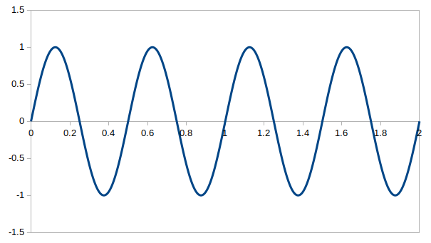

$w' = 4\pi$ [rad/秒]、$\textrm{T} = 1/2$[秒]、$n = 2$ [回]

デルタ関数(インパルス信号) $\delta(t)$ の片側ラプラス変換は
\begin{align*} \textrm{F}(s) &= \int_{0}^{\infty} \left \{ \delta(t) \cdot \textrm{e}^{\{- s \cdot t \}} \right \} \textrm{d}t \\[10pt] (\text{デルタ関数の性質より}) &= \textrm{e}^{0} \\[10pt] &= 1 \end{align*}
となります。
極は無いので、収束領域は S 平面全域になります。
の片側ラプラス変換は
\begin{align*} \textrm{F}(s) &= \int_{0}^{\infty} \left \{ \textrm{e}^{\{j \cdot w' \cdot t \}} \cdot \textrm{e}^{\{- s \cdot t \}} \right \} \textrm{d}t \\[10pt] &= \int_{0}^{\infty} \left \{ \textrm{e}^{ ( j \cdot w' -s ) \cdot t } \right \} \textrm{d}t \\[10pt] &= \lim_{a \rightarrow \infty} \left [ \frac{ \textrm{e}^{ ( j \cdot w' -s ) \cdot t } }{ j \cdot w' -s } \right ]^a_0 \\[10pt] &= \lim_{a \rightarrow \infty} \frac{ \textrm{e}^{ ( j \cdot w' -s ) \cdot a } }{ j \cdot w' -s } + \frac{1}{s - j \cdot w'} \\[10pt] &= \lim_{a \rightarrow \infty} \frac{ \textrm{e}^{ -\sigma \cdot a } \cdot \textrm{e}^{ j (w' -w ) \cdot a } }{ j \cdot w' -s } + \frac{1}{s - j \cdot w'} \\[10pt] \end{align*}ここで $s \ne j\cdot w'$ かつ $\sigma > 0$ としたとき、上の第1項は 0 に収束するので
\[ \textrm{F}(s) =\frac{1}{s - j \cdot w'} \]
となります。
極は $s = j\cdot w'$ ひとつなので収束座標は 0、収束領域は $\sigma >0$ です。
$f(t)=1$ の片側ラプラス変換は例2で $w'=0$ とした場合なので
\[ \textrm{F}(s) =\frac{1}{s} \]
となります。
極は $s = 0$ 、収束座標は 0、収束領域は $\sigma >0$ です。
ちなみにこのラプラス変換式はフィルタで言うと積分要素の伝達関数に相当します。
例2で求めた $\textrm{e}^{\{j \cdot w' \cdot t \}}$ の片側ラプラス変換を変形すると
\begin{align*} \textrm{F}(s) &= \frac{1}{s - j \cdot w'} \\[10pt] &= \frac{s + j \cdot w'}{s^2 + w'^2} \\[10pt] &= \frac{s}{s^2 + w'^2} + j \cdot \frac{w'}{s^2 + w'^2} \\[10pt] \end{align*}となりますが、オイラー公式を考慮すると $f(t) = \cos (w' \cdot t)$ の片側ラプラス変換は
\[ \textrm{F}(s) = \frac{s}{s^2 + w'^2} \]$f(t) = \sin (w' \cdot t)$ の片側ラプラス変換は
\[ \textrm{F}(s) = \frac{w'}{s^2 + w'^2} \]
となります。
また
なので極は $s = \pm j\cdot w'$ 、収束座標は 0、収束領域は $\sigma >0$ です。
$a > 0$ を有限な値とした時、単一パルス
\[ f(t) = \begin{cases} 0 \ & t <0 \\[10pt] 1 \ & 0 \leq t \leq a \\[10pt] 0 & t > a \end{cases} \]の片側ラプラス変換は以下の様に普通に求められます。
\begin{align*} \textrm{F}(s) &= \int_{0}^{a} \left \{ \textrm{e}^{\{- s \cdot t \}} \right \} \textrm{d}t \\[10pt] &= \left [ \frac{\textrm{e}^{\{- s \cdot t \}}}{-s} \right ]^a_0 \\[10pt] &= \frac{1 - \textrm{e}^{\{- s \cdot a \} }}{s} \end{align*}ちなみに $s=0$ の時はロピタルの定理を使って
\[ \textrm{F}(0) = \frac{ a \cdot \textrm{e}^0 }{1} = a \]となりますので、極無し、収束領域は S 平面全域になります。
$a$ を $a > 0$ の実数としたとき、指数減衰
\[ f(t) = \textrm{e}^{ \{ -a \cdot t \} } \](ただし $t \geq 0$)の片側ラプラス変換は例 2 で $j \cdot w' = -a$ 、つまり $w' = j \cdot a$ とした場合なので
\[ \textrm{F}(w) = \frac{ 1 }{ s + a } \]となります。
極は $s = -a$ ひとつなので、収束座標は -a、収束領域は $\sigma > -a$ です。
単位ステップ関数
\[ u(t)= \begin{cases} 0 \ & t < 0 \\[10pt] 1 & t \geq 0 \end{cases} \]
の片側ラプラス変換は例3の $f(t)=1$ の片側ラプラス変換と同等です。
よって
となります。
極は $s = 0$ 、収束座標は 0、収束領域は $\sigma >0$ です。
$a$ を $a > 0$ の実数としたとき、正弦波の指数減衰
\[ f(t) = \sin(w' \cdot t) \cdot \textrm{e}^{ \{ -a \cdot t \} } \](ただし $t \geq 0$)はオイラー公式より
\begin{align*} f(t) &= \frac{\textrm{e}^{ \{ j \cdot w' \cdot t - a \cdot t \}} - \textrm{e}^{ \{ -j \cdot w' \cdot t - a \cdot t \} } } { 2 \cdot j } \\[10pt] &= \frac{\textrm{e}^{ \{ j \cdot (w' - a/j) \cdot t \}} - \textrm{e}^{ \{ -j \cdot (w' \cdot t + a/j) \cdot t \} } } { 2 \cdot j } \\[10pt] \end{align*}となりますので、後は例2と同様にして片側ラプラス変換は
\begin{align*} \textrm{F}(w) &= \frac{1}{2\cdot j} \left \{ \frac{1}{s-j\cdot (w' - a/j)} - \frac{1}{s+j\cdot (w' + a/j)} \right \} \\[10pt] &= \frac{1}{2\cdot j} \frac{(s+a+j\cdot w') - (s+a-j\cdot w')}{ (s+a-j\cdot w') \cdot (s+a+j\cdot w') } \\[10pt] &= \frac{w'}{(s+a)^2+(w')^2} \end{align*}
となります。
極は $s = -a \pm j \cdot w'$ なので、収束座標は -a、収束領域は $\sigma > -a$ です。
正弦波 $\sin(w'\cdot t)$ の周期を $\textrm{T} = 2\pi/w'$ [秒] とします。
$n$ を 1 以上の整数としたとき次の信号を考えます。
例えば、$w' = 4\pi$ [rad/秒]、$\textrm{T} = 1/2$[秒]、$n = 2$ [回]の場合は次のグラフになります。
$w' = 4\pi$ [rad/秒]、$\textrm{T} = 1/2$[秒]、$n = 2$ [回]
次に普通の正弦波の式(ただし $t \geq 0$)
\[ g(t) = \sin(w'\cdot t) \ ,\ (t \geq 0) \]および $g(t)$ を $n\cdot \textrm{T}$ 秒だけ右にシフトした式
\[ h(t) = \begin{cases} 0 & t \leq n\cdot \textrm{T} \\[10pt] \sin(w'\cdot t) \ & t > n\cdot \textrm{T} \end{cases} \]を考えます(図2、3)。
$w' = 4\pi$ [rad/秒]
$w' = 4\pi$ [rad/秒]、$\textrm{T} = 1/2$[秒]、$n = 2$ [回]
ここで
\[ f(t) = g(t) - h(t) \]なので、$f(t)$ の片側ラプラス変換は $g(t)$ の片側ラプラス変換から $h(t)$ の片側ラプラス変換を引いた式となります。
さて $g(t)$ のラプラス変換は例4より
\[ \textrm{G}(s) = \frac{w'}{s^2 + w'^2} \]
です。
また $h(t)$ は $g(t)$ を $n\cdot \textrm{T}$ [秒] だけ右シフトした式なので、そのラプラス変換は
となります。
よって $f(t)$ のラプラス変換は
\[ \textrm{F}(s) = \textrm{G}(s) - \textrm{H}(s) = \frac{w'}{s^2 + (w')^2} \cdot \left ( 1 - \textrm{e}^{ \{ - n \cdot \textrm{T} \cdot s \} } \right ) \]
です。
なお $s = \pm j \cdot w'$ の時はロピタルの定理より
\begin{align*} \textrm{F}(\pm j\cdot w') &= \lim_{s \rightarrow \pm j\cdot w'} \frac{w'}{2s} \cdot \left ( n \cdot \textrm{T} \cdot \textrm{e}^{ \{ - n \cdot \textrm{T} \cdot s \} } \right ) \\[10pt] &= \pm \frac{1}{2 \cdot j} \cdot \left ( n \cdot \textrm{T} \cdot \textrm{e}^{ \{ \mp j \cdot n \cdot 2 \pi \} } \right ) \\[10pt] &= \mp \frac{j \cdot n \cdot \textrm{T}}{2} \end{align*}となりますので、極無し、収束領域は S 平面全域になります。